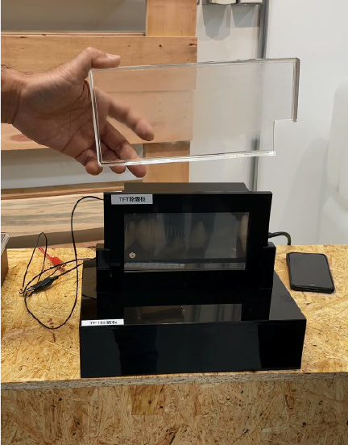

| 面板組件新應用技術 The new application of TFT panel components |
| 傳統的面板不良品主要以破碎方式處理，導入新技術將缺陷不良品之面板進行新應用，開發成透明加熱器，可應用於除霧裝置等功能。同時整合自行開發之功能性保護膜，使整體模組有疏水、絕緣、耐候等特性。此面板組件新應用設計，可減少面板廢棄不良品，降低環境負擔，增加面板效益。 Using the defective TFT panel developed into transparent heaters, which can be applied to defog devices. At the same time, integrated the functional protective film, so that the modules have hydrophobic characteristics, insulation and weather resistance. The new application can reduce panel waste, environmental burden and increase panel benefit.  |
| 技術洽詢聯絡人：蘇俊瑋 聯絡電話：03-591-4151 手機:0939-604696 E-mail：chunweisu@itri.org.tw |